原文连接:https://www.cnblogs.com/Tiancheng-Duan/p/11858902.html
Java锁-Synchronized深层剖析
前言
Java锁的问题，可以说是每个JavaCoder绕不开的一道坎。如果只是粗浅地了解Synchronized等锁的简单应用，那么就没什么谈的了，也不建议继续阅读下去。如果希望非常详细地了解非常底层的信息，如monitor源码剖析，SpinLock，TicketLock，CLHLock等自旋锁的实现，也不建议看下去，因为本文也没有说得那么深入。本文只是按照synchronized这条主线，探讨一下Java的锁实现，如对象头部，markdown，monitor的主要组成，以及不同锁之间的转换。至于常用的ReentrantLock，ReadWriteLock等，我将在之后专门写一篇AQS主线的Java锁分析。
不是我不想解释得更为详细，更为底层，而是因为两个方面。一方面正常开发中真的用不到那么深入的原理。另一方面，而是那些非常深入的资料，比较难以收集，整理。当然啦，等到我的Java积累更加深厚了，也许可以试试。囧
由于Java锁的内容比较杂，划分的维度也是十分多样，所以很是纠结文章的结构。经过一番考虑，还是采用类似正常学习，推演的一种逻辑来写（涉及到一些复杂的新概念时，再详细描述）。希望大家喜欢。
Java锁的相关概念
如果让我谈一下对程序中锁的最原始认识，那我就得说说PV操作（详见我在系统架构师中系统内部原理的笔记）了。通过PV操作可以实现同步效果，以及互斥锁等。
如果让我谈一下对Java程序中最常见的锁的认识，那无疑就是Synchronized了。
Java锁的定义
那么Java锁是什么？网上许多博客都谈到了偏向锁，自旋锁等定义，唯独就是没人去谈Java锁的定义。我也不能很好定义它，因为Java锁随着近些年的不断扩展，其概念早就比原来膨胀了许多。硬要我说，Java锁就是在多线程情况下，通过特定机制（如CAS），特定对象（如Monitor），配合LockRecord等，实现线程间资源独占，流程同步等效果。
当然这个定义并不完美，但也算差不多说出了我目前对锁的认识（貌似这不叫定义，不要计较）。
Java锁的分类标准
- 自旋锁：是指当一个线程在获取锁的时候，如果锁已经被其他线程获取，那么该线程将循环等待，然后不断的判断锁是否能够被成功获取，直到获取到锁才会退出循环（之前文章提到的CAS就是自旋锁）
- 乐观锁：假定没有冲突，再修改数据时如果发现数据和之前获取的不一致，则读最新数据，修改后重试修改（之前文章提到的CAS就是乐观锁）
- 悲观所：假定一定会发生并发冲突，同步所有对数据的相关操作，从读数据就开始上锁（Synchronized就是悲观锁）
- 独享锁：给资源加上独享锁，该资源同一时刻只能被一个线程持有（如JUC中的写锁）
- 共享锁：给资源加上共享锁，该资源可同时被多个线程持有（如JUC中的读锁）
- 可重入锁：线程拿到某资源的锁后，可自由进入同一把锁同步的其他代码（即获得锁的线程，可多次进入持有的锁的代码中，如Synchronized就是可重入锁）
- 不可重入锁：线程拿到某资源的锁后，不可进入同一把锁同步的其他代码
- 公平锁：争夺锁的顺序，获得锁的顺序是按照先来后到的（如ReentrantLock(true)）
- 非公平所：争夺锁的顺序，获得锁的顺序并非按照先来后到的（如Synchronized)
其实这里面有很多有意思的东西，如自旋锁的特性，大家都可以根据CAS的实现了解到了。Java的自选锁在JDK4的时候就引入了（但当时需要手动开启），并在JDK1.6变为默认开启，更重要的是，在JDK1.6中Java引入了自适应自旋锁（简单说就是自旋锁的自旋次数不再固定）。又比如自旋锁一般都是乐观锁，独享锁是悲观所的子集等等。
** Java锁还可以按照底层实现分为两种。一种是由JVM提供支持的Synchronized锁，另一种是JDK提供的以AQS为实现基础的JUC工具，如ReentrantLock，ReadWriteLock，以及CountDownLatch，Semaphore，CyclicBarrier等。**
Java锁-Synchronized
Synchronized应该是大家最早接触到的Java锁，也是大家一开始用得最多的锁。毕竟它功能多样，能力又强，又能满足常规开发的需求。
有了上面的概念铺垫，就很好定义Synchronized了。Synchronized是悲观锁，独享锁，可重入锁。
当然Synchronized有多种使用方式，如同步代码块（类锁），同步代码块（对象锁），同步非静态方法，同步静态方法四种。后面有机会，我会挂上我笔记的相关页面。但是总结一下，其实很简单，注意区分锁的持有者与锁的目标就可以了。static就是针对类（即所有对该类的实例对象）。
其次，Synchronized不仅实现同步，并且JMM中规定，Synchronized要保证可见性（详细参照笔记中对volatile可见性的剖析)。
然后Synchronized有锁优化：锁消除，锁粗化（JDK做了锁粗化的优化，但可以通过代码层面优化，可提高代码的可读性与优雅性）
另外，Synchronized确实很方便，很简单，但是也希望大家不要滥用，看起来很糟糕，而且也让后来者很难下叉。
Java锁的实现原理
终于到了重头戏，也到了最消耗脑力的部分了。这里要说明一点，这里提及的只是常见的锁的原理，并不是所有锁原理展示（如Synchronized展示的是对象锁，而不是类锁，网上也基本没有博客详细写类锁的实现原理，但不代表没有）。如Synchronized方法是通过ACC_SYNCHRONIZED进行隐式同步的。
对象在内存中的结构（重点）
首先，我们需要正常对象在内存中的结构，才可以继续深入研究。
JVM运行时数据区分为线程共享部分（MetaSpace，堆），线程私有部分（程序计数器，虚拟机栈，本地方法栈）。这部分不清楚的，自行百度或查看我之前有关JVM的笔记。那么堆空间存放的就是数组与类对象。而MetaSpace（原方法区/持久代）主要用于存储类的信息，方法数据，方法代码等。
我知道，没有图，你们是不会看的。
PS:为了偷懒，我放的都是网络图片，如果挂了。嗯，你们就自己百度吧
PS2:如果使用的网络图片存在侵权问题，请联系我，抱歉。
第一张图，简单地表述了在JVM中堆，栈，方法区三者之间的关系

我来说明一下，我们代码中类的信息是保存在方法区中，方法区保存了类信息，如类型信息，字段信息，方法信息，方法表等。简单说，方法区是用来保存类的相关信息的。详见下图：
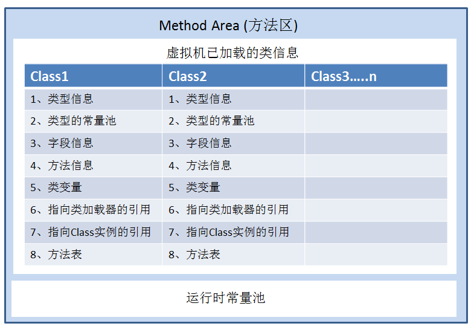
而堆，用于保存类实例出来的对象。
以hotspot的JVM实现为例，对象在对内存中的数据分为三个部分：
- 对象头（Header）：保存对象信息与状态（重点，后面详细说明）
- 实例数据（Instance Data）：对象真正存储的有效数据（代码定义字段，即对象中的实际数据）
- 对齐填充（Padding）：VM的自动内存管理要求对象起始地址必须是8字节的整数倍（说白了，就是抛弃的内存空间）
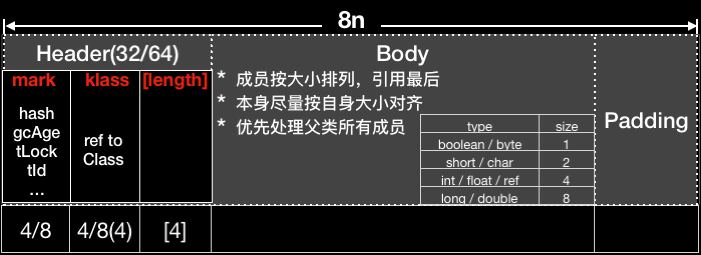
简单说明一下，对齐填充的问题，可以理解为系统内存管理中页式内存管理的内存碎片。毕竟内存都是要求整整齐齐，便于管理的。如果还不能理解，举个栗子，正常人规划自己一天的活动，往往是以小时，乃至分钟划分的时间块，而不会划分到秒，乃至微妙。所以为了便于内存管理，那些零头内存就直接填充好了，就像你制定一天的计划， 晚上睡眠的时间可能总是差几分钟那样。如果你还是不能理解，你可以查阅操作系统的内存管理相关知识（各类内存管理的概念，如页式，段式，段页式等）。
如果你原先对JVM有一定认识，却理解不深的话，可能就有点迷糊了。
Java对象中的实例数据部分存储对象的实际数据，什么是对象的实际数据？这些数据与虚拟机栈中的局部变量表中的数据又有什么区别？
且听我给你编，啊呸，我给你说明。为了便于理解，插入图片
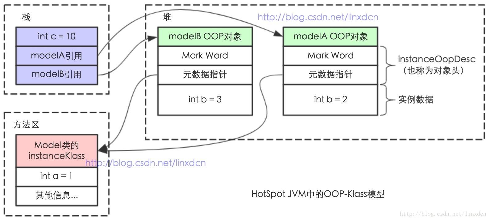
Java对象中所谓的实际数据就是属于对象中的各个变量（属于对象的各个变量不包括函数方法中的变量，具体后面会谈到）。这里有两点需要注意：
- 代码中是由实际变量与引用变量的概念之分的。实际变量就是实际保存值的变量，而引用变量是一个类似C语言指针的存在，它不保存目标值，而是保存实际变量的引用地址。如果你还是没法理解，你可以通过数组实验，或认识Netty零拷贝，原型模式等方法去了解相关概念，增强积累。
- 内存中对象存储的变量多为引用变量。
- 那么对象除了各种实际数据外，就是各种函数方法了（函数方法的内存表示，网上很多博客都描述的语焉不详，甚至错误）。函数方法可以分为两个部分来看：一方面是整体逻辑流程，这个是所有实例对象所共有的，故保存在方法区（而不是某些博客所说的，不是具体实现，所以内存中不存在。代码都压入内存了，你和我说执行逻辑不存在？）。另一方面是数据（属性，变量这种），这个即使是同一个实例对象不同调用时也是不一样的，故运行时保存在栈（具体保存在虚拟机栈，还是本地方法栈，取决于方法是否为本地方法，即native方法。这部分网上说明较多）。
针对第二点，我举个实际例子。
如StudentManager对象中有Student stu = new Student("ming");，那么在内存中是存在两个对象的：StudentManger实例对象，Student实例对象（其传入构造方法的参数为"ming"）。而在StudentManager实例对象中有一个Student类型的stu引用变量，其值指向了刚才说的Student实例对象（其传入构造方法的参数为"ming"）。那么再深入一些，为什么StudentManager实例对象中的stu引用变量要强调是Student类型的，因为JVM要在堆中为StudentManager实例对象分配明确大小的内存啊，所以JVM要知道实例对象中各个引用变量需要分配的内存大小。那么stu引用变量是如何指向Student实例对象（其传入构造方法的参数为"ming"）的？这个问题的答案涉及到句柄的概念，这里简单立即为指针指向即可。
数组是如何确定内存大小的。
那么数组在内存中的表现是怎样的呢？其实和之前的思路还是一样的。引用变量指向实际值。
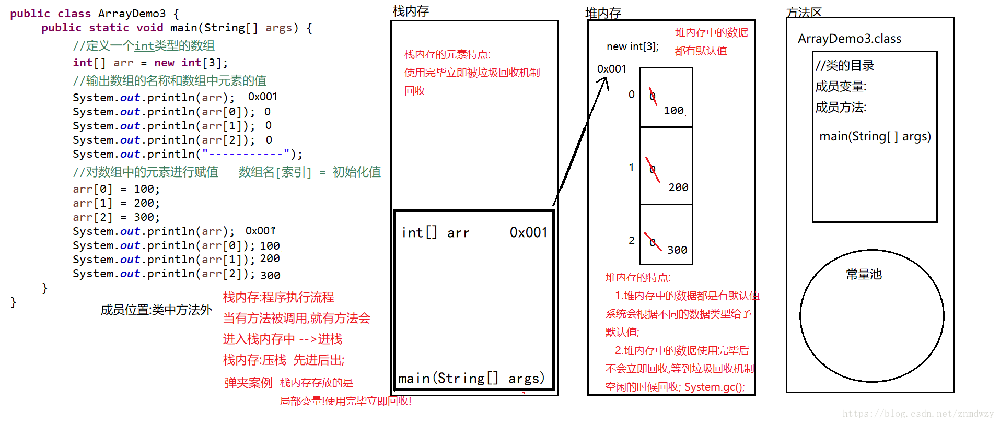
二维数组的话，第一层数组中保存的是一维数组的引用变量。其实如果学习过C语言，并且学得还行的话，这些概念都很好理解的。
关于对象中的变量与函数方法中的变量区别及缘由：众所周知，Java有对内存与栈内存，两者都有着保存数据的职责。堆的优势可以动态分配内存大小，也正由于动态性，所以速度较慢。而栈由于其特殊的数据结构-栈，所以速度较快。一般而言，对象中的变量的生命周期比对象中函数方法的变量的生命周期更长（至少前者不少于后者）。当然还有一些别的原因，最终对象中的变量保存在堆中，而函数方法的变量放在栈中。
补充一下，Java的内存分配策略分为静态存储，栈式存储，堆式存储。后两者本文都有提到，说一下静态存储。静态存储就是编译时确定每个数据目标在运行时的存储需求，保存在堆内对应对象中。
针对虚拟机栈（本地方法不在此讨论），简单说明一下（因为后面用得到）。
先上个图
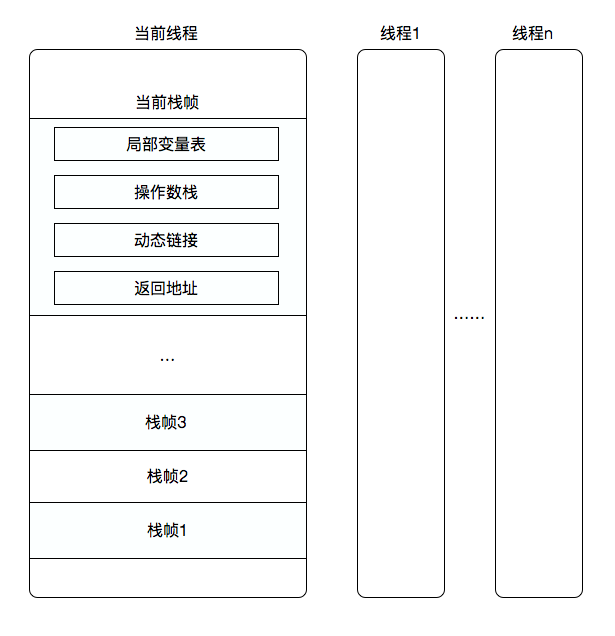
虚拟机栈属于JVM中线程私有的部分，即每个线程都有属于自己的虚拟机栈（Stack）。而虚拟机栈是由一个个虚拟机栈帧组成的，虚拟机栈帧（Stack Frame）可以理解为一次方法调用的整体逻辑流程（Java方法执行的内存模型）。而虚拟机栈是由局部变量表（Local Variable Table），操作栈（Operand Stack），动态连接（Dynamic Linking）,返回地址（Reture Address）等组成。简单说明一下，局部变量表就是用于保存方法的局部变量（生命周期与方法一致。注意基本数据类型与对象的不同，如果是对象，则该局部变量为一个引用变量，指向堆内存中对应对象），操作栈用于实现各种加减乘除的操作等（如iadd，iload等），动态链接（这个解释比较麻烦，详见《深入理解Java虚拟机》p243），返回地址（用于在退出栈帧时，恢复上层栈帧的执行状态。说白了就是A方法中调用B方法，B方法执行结束后，如何确保回到A方法调用B方法的位置与状态，毕竟一个线程就一个虚拟机栈）。
到了这一步，就满足了接下来学习的基本要求了。如果希望有更为深入的理解，可以坐等我之后有关JVM的博客，或者查看我的相关笔记，或者查询相关资料（如百度，《深入理解Java虚拟机》等。
Java对象头的组成（不同状态下的不同组成）
说了这么多，JVM是如何支持Java锁呢？
前面Java对象的部分，我们提到了对象是由对象头，实例数据，对齐填充三个部分组成。其中后两者已经进行了较为充分的说明，而对象头还没有进行任何解释，而锁的实现就要靠对象头完成。
对象头由两到三个部分组成：
- Mark Word：存储对象hashCode，分代年龄，锁类型，锁标志位等信息（长度为JVM的一个字大小）；
- Class Metadata Address：类型指针，指向对象的类元数据（JVM通过这个指针确定该对象是哪个类的实例，指针的长度为JVM的一个字大小）；
- Array Length：[只有数组对象有该部分] 数组对象的对象头必须有一块记录数组长度的数据（因为JVM可通过对象的元数据信息确定Java对象大小，但从数组的元数据中无法确定数组大小）（长度为JVM的一个字大小）。
后两者不是重点，也与本次主题无关，不再赘述。让我们来细究一下Mark Word的具体数据结构，及其在内存中的表现。
来，上图。

一般第一次看看这个图，都有点蒙，什么玩意儿啊，到底怎么理解啊。
所以这个时候需要我来给你举个简单例子。
如一个对象头是这样的：AAA..(一共23个A)..AAA BB CCCC D EE 。其中23个A表示线程ID，2位B表示Epoch，4位C表示对象的分代年龄，1位D表示该对象的锁是否为偏向锁，2位E表示锁标志位。
至于其它可能嘛。看到大佬已经写了一个表格，情况说明得挺好的，就拿来主义了。
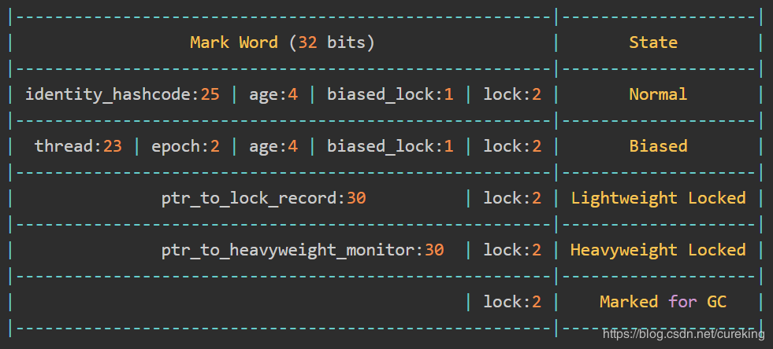
图中展现了对象在无锁，偏向锁，轻量级锁，重量级锁，GC标记五种状态下的Mark Word的不同。
| biased_lock | lock | 状态 |
|---|---|---|
| 0 | 01 | 无锁 |
| 1 | 01 | 偏向锁 |
| 0 | 00 | 轻量级锁 |
| 0 | 10 | 重量级锁 |
| 0 | 11 | GC标记 |
引用一下这位大佬的解释哈（毕竟大佬解释得蛮全面的，我就不手打了，只做补充）。
- thread：持有偏向锁的线程ID。
- epoch：偏向时间戳。
- age：4位的Java对象年龄。在GC中，如果对象在Survivor区复制一次，年龄增加1。当对象达到设定的阈值时，将会晋升到老年代。默认情况下，并行GC的年龄阈值为15，并发GC的年龄阈值为6。由于age只有4位，所以最大值为15，这就是-XX:MaxTenuringThreshold选项最大值为15的原因。
- biased_lock：对象是否启用偏向锁标记，只占1个二进制位。为1时表示对象启用偏向锁，为0时表示对象没有偏向锁。
- identity_hashcode：25位的对象标识Hash码，采用延迟加载技术。调用方法System.identityHashCode()计算，并会将结果写到该对象头中。当对象被锁定时，该值会移动到管程Monitor中。
- ptr_to_lock_record：指向栈中锁记录的指针。
- ptr_to_heavyweight_monitor：指向管程Monitor的指针。
可能你看到这里，会对上面的解释产生一定的疑惑，什么是栈中锁记录，什么是Monitor。别急，接下来的Synchronized锁的实现就会应用到这些东西。
Java锁的内存实现
现在就让我们来看看我们平时使用的Java锁在JVM中到底是怎样的情况。
Synchronized锁一共有四种状态：无锁，偏向锁，轻量级锁，重量级锁。其中偏向锁与轻量级锁是由Java6提出，以优化Synchronized性能的（具体实现方式，后续可以看一下，有区别的）。
在此之前，我要简单申明一个定义，首先锁竞争的资源，我们称为“临界资源”（如：Synchronized(this)中指向的this对象）。而竞争锁的线程，我们称为锁的竞争者，获得锁的线程，我们称为锁的持有者。
无锁状态
就是对象不持有任何锁。其对象头中的mark word是
| 含义 | identity_hashcode | age | biased_lock | lock | |
|---|---|---|---|---|---|
| 示例 | aaa...(25位bit) | xxxx（4位bit） | 0（1位bit ，具体值：0） | 01（2位bit ，具体值：01） |
无锁状态没什么太多说的。
这里简单说一下identity_hashcode的含义，25bit位的对象hash标识码，用于标识这是堆中哪个对象的对象头。具体会在后面的锁中应用到。
那么这个时候一个线程尝试获取该对象锁，会怎样呢？
偏向锁状态
如果一个线程获得了锁，即锁直接成为了锁的持有者，那么锁（其实就是临界资源对象）就进入了偏向模式，此时Mark Word的结果就会进入之前展示的偏向锁结构。
那么当该线程进再次请求该锁时，无需再做任何同步操作（不需要再像第一次获得该锁那样，进行较为复杂的操作），即获取锁的过程只需要检查Mark Word的锁标记位位偏向锁并且当前线程ID等于Mark Word的ThreadID即可，从而节省大量有关锁申请的操作。
看得有点懵，没关系，我会好好详细解释的。此处有关偏向锁的内存变化过程就两个，一个是第一次获得锁的过程，一个是后续获得该锁的过程。
接下来，我会结合图片，来详细阐述这两个过程的。
当一个线程通过Synchronized锁，出于需求，对共享资源进行独占操作时，就得试图向别的锁的竞争者宣誓锁的所有权。但是，此时由于该锁是第一次被占用，也不确定是否后面还有别的线程需要占有它（大多数情况下，锁不存在多线程竞争情况，总是由同一线程多次获得该锁），所以不会立马进入资源消耗较大的重量锁，轻量级锁，而是选择资源占用最少的偏向锁。为了向后面可能存在的锁竞争者线程证明该共享资源已被占用，该临界资源的Mark Word就会做出相应变化，标记该临界资源已被占用。具体Mark Word会变成如下形式：
| 含义 | thread | epoll | age | biased_lock | lock |
|---|---|---|---|---|---|
| 示例 | aaa...(23位bit) | bb（2位bit） | xxxx（4位bit） | 1（1位bit ，具体值：1） | 01（2位bit ，具体值：01） |
这里我来说明一下其中各个字段的具体含义：
- thread用于标识当前持有锁的线程（即在偏向锁状态下，表示当前该临界资源被哪个线程持有）
- epoll：用于记录当前对象的mark word变为偏向结果的时间戳（即当前临界资源被持有的时间戳）
- age：与无锁状态作用相同，无变化
- biased_lock：值为1，表示当前mark word为偏向锁结构
- lock：配合biased_lock共同表示当前mark word为偏向锁结果（至于为什么需要两个字段共同表示，一方面2bit无法表示4种结构，另一方面，最常用的偏向锁结果，利用1bit表示，既可以快速检验，又可以降低检验的资源消耗。需要的话，之后细说，或@我）
接下来就是第二个过程：锁的竞争者线程尝试获得锁，那么锁的竞争者线程会检测临界资源，或者说锁对象的mark word。如果是无锁状态，参照上一个过程。如果是偏向锁状态，就检测其thread是否为当前线程（锁的竞争者线程）的线程ID。如果是当前线程的线程ID，就会直接获得临界资源，不需要再次进行同步操作（即上一个过程提到的CAS操作）。
还看不懂，再引入一位大佬的流程解释：
偏向锁的加锁过程：
访问Mark Word中偏向锁的标识是否设置成1，锁标志位是否为01，确认为可偏向状态。
如果为可偏向状态，则测试线程ID是否指向当前线程，如果是，进入步骤5，否则进入步骤3。
如果线程ID并未指向当前线程，则通过CAS操作竞争锁。如果竞争成功，则将Mark Word中线程ID设置为当前线程ID，然后执行5；如果竞争失败，执行4。
如果CAS获取偏向锁失败，则表示有竞争。当到达全局安全点（safepoint）时获得偏向锁的线程被挂起，偏向锁升级为轻量级锁，然后被阻塞在安全点的线程继续往下执行同步代码。（撤销偏向锁的时候会导致stop the word）
执行同步代码。
PS：safepoint（没有任何字节码正在执行的时候）：详见JVM GC相关，其会导致stop the world。
偏向锁的存在，极大降低了Syncronized在多数情况下的性能消耗。另外，偏向锁的持有线程运行完同步代码块后，不会解除偏向锁（即锁对象的Mark Word结构不会发生变化，其threadID也不会发生变化）
那么，如果偏向锁状态的mark word中的thread不是当前线程（锁的竞争者线程）的线程ID呢？
轻量级锁
轻量级锁可能是由偏向锁升级而来的，也可能是由无锁状态直接升级而来（如通过JVM参数关闭了偏向锁）。
偏向锁运行在一个线程进入同步块的情况下，而当第二个线程加入锁竞争时，偏向锁就会升级轻量级锁。
如果JVM关闭了偏向锁，那么在一个线程进入同步块时，锁对象就会直接变为轻量级锁（即锁对象的Mark Word为偏向锁结构）。
上面的解释非常简单，或者说粗糙，实际的判定方式更为复杂。我在查阅资料时，发现网上很多博客根本没有深入说明偏向锁升级轻量级锁的深层逻辑，直到看到一篇博客写出了以下的说明：
当线程1访问代码块并获取锁对象时，会在java对象头和栈帧中记录偏向的锁的threadID，因为偏向锁不会主动释放锁，因此以后线程1再次获取锁的时候，需要比较当前线程的threadID和Java对象头中的threadID是否一致，如果一致（还是线程1获取锁对象），则无需使用CAS来加锁、解锁；如果不一致（其他线程，如线程2要竞争锁对象，而偏向锁不会主动释放因此还是存储的线程1的threadID），那么需要查看Java对象头中记录的线程1是否存活，如果没有存活，那么锁对象被重置为无锁状态，其它线程（线程2）可以竞争将其设置为偏向锁；如果存活，那么立刻查找该线程（线程1）的栈帧信息，如果还是需要继续持有这个锁对象，那么暂停当前线程1，撤销偏向锁，升级为轻量级锁，如果线程1 不再使用该锁对象，那么将锁对象状态设为无锁状态，重新偏向新的线程。
这段说明的前半截，我已经在偏向锁部分说过了。我来说明一下其后半截有关锁升级的部分。
如果当前线程（锁的竞争者线程）的线程ID与锁对象的mark word的thread不一致（其他线程，如线程2要竞争锁对象，而偏向锁不会主动释放因此还是存储的线程1的threadID），那么需要查看Java对象头中记录的线程1是否存活（可以直接根据锁对象的Mark Word（更准确说是Displaced Mark Word）的thread来判断线程1是否还存活），如果没有存活，那么锁对象被重置为无锁状态，从而其它线程（线程2）可以竞争该锁，并将其设置为偏向锁（等于无锁状态下，重新偏向锁的竞争）；如果存活，那么立刻查找该线程（线程1）的栈帧信息，如果线程1还是需要继续持有这个锁对象，那么暂停当前线程1，撤销偏向锁，升级为轻量级锁，如果线程1 不再使用该锁对象，那么将锁对象状态设为无锁状态，重新偏向新的线程。（这个地方其实是比较复杂的，如果有不清楚的，可以@我。）
那么另一个由无锁状态升级为轻量级锁的内存过程，就是：
首先让我来说明一下上面提到的“如果线程1还是需要继续持有这个锁对象，那么暂停当前线程1，撤销偏向锁，升级为轻量级锁”涉及的三个问题。
- 为什么需要暂停线程1
- 如何撤销偏向锁
- 如何升级轻量级锁
第一个问题，如果不暂停线程1，即线程1的虚拟机栈还在运行，那么就有可能影响到相关的Lock Record，从而导致异常发生。
第二个问题与第三个问题其实是一个问题，就是通过修改Mark Word的锁标志位(lock)与偏向锁标志（biased_lock)。将Mark Word修改为下面形式：
| 含义 | thread | epoll | age | biased_lock | lock |
|---|---|---|---|---|---|
| 示例 | aaa...(23位bit) | bb（2位bit） | xxxx（4位bit） | 1（1位bit ，具体值：1） | 01（2位bit ，具体值：01） |
在代码进入同步块的时候，如果锁对象的mark word状态为无锁状态，JVM首先将在当前线程的栈帧）中建立一个名为锁记录（Lock Record）的空间，用于存储Displaced Mark Word（即锁对象目前的Mark Word的拷贝）。
有资料称：Displaced Mark Word并不等于Mark Word的拷贝，而是Mark Word的前30bit（32位系统），即Hashcode+age+biased_lock，不包含lock位。但是目前我只从网易微专业课听到这点，而其它我看到的任何博客都没有提到这点。所以如果有谁有确切资料，希望告知我。谢谢。
锁的竞争者尝试获取锁时，会先拷贝锁对象的对象头中的Mark Word复制到Lock Record，作为Displaced Mark Word。然后就是之前加锁过程中提到到的，JVM会通过CAS操作将锁对象的Mark Word更新为指向Lock Record的指针（这与之前提到的修改thread的CAS操作毫无关系，就是修改锁对象的引用变量Mark Word的指向，直接指向锁的竞争者线程的Lock Record的Displaced Mark Word）。CAS成功后，将Lock Record中的owner指针指向锁对象的Mark Word。而这就表示锁的竞争者尝试获得锁成功，成为锁的持有者。
而这之后，就是修改锁的持有者线程的Lock Record的Displaced Mark Word。将Displaced Mark Word的前25bit（原identity_hashcode字段）修改为当前线程（锁的竞争者线程）的线程ID（即Mark word的偏向锁结构中的thread）与当前epoll时间戳（即获得偏向锁的epoll时间戳），修改偏向锁标志位（从0变为1）。
听得有点晕晕乎乎，来，给你展示之前那位大佬的流程解释（另外我还增加了一些注释）：
轻量级锁的加锁过程（无锁升级偏向锁）：
在代码进入同步块的时候，如果同步对象锁状态为无锁状态（锁标志位为“01”状态，是否为偏向锁为“0”），虚拟机首先将在当前线程的栈帧（即同步块进入的地方，这个需要大家理解基于栈的编程的思想)中建立一个名为锁记录（Lock Record）的空间，用于存储 Displaced Mark Word(锁对象目前的Mark Word的拷贝)。这时候线程堆栈与对象头的状态如图：
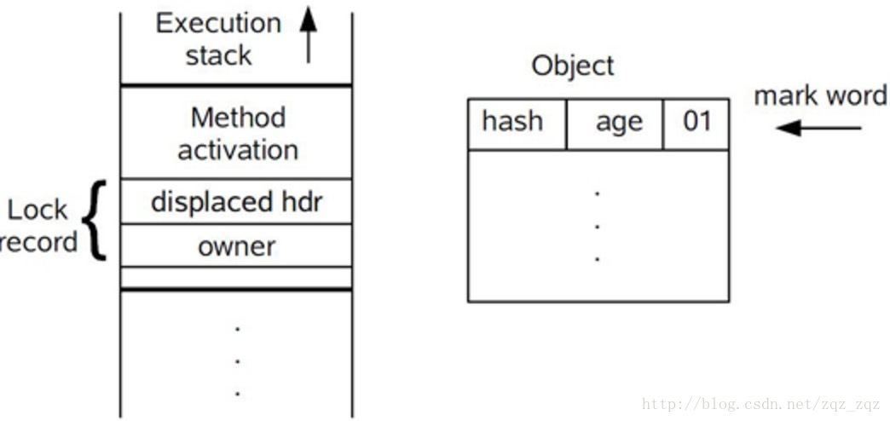
(上图中的Object就是锁对象。)拷贝对象头中的Mark Word复制到锁记录中，作为Displaced Mark Word；
拷贝成功后，JVM会通过CAS操作（旧值为Displaced Mark Word，新值为Lock Record Adderss，即当前线程的锁对象地址）将锁对象的Mark Word更新为指向Lock Record的指针（就是修改锁对象的引用变量Mark Word的指向，直接指向锁的竞争者线程的Lock Record的Displaced Mark Word），并将Lock record里的owner指针指向锁对象的Mark Word。如果更新成功，则执行步骤4，否则执行步骤5。
如果这个更新动作成功了，那么这个线程就拥有了该对象的锁，并且对象Mark Word的锁标志位设置为“00”，即表示此对象处于轻量级锁定状态，这时候线程堆栈与对象头的状态如图所示。
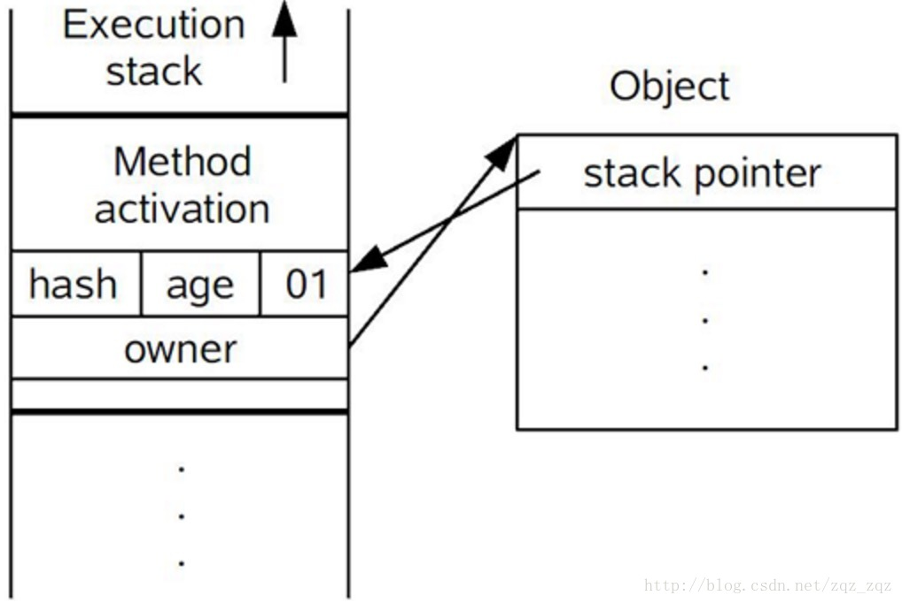
(上图中的Object就是锁对象。)如果这个更新操作失败了，虚拟机首先会检查对象的Mark Word是否指向当前线程的栈帧，如果是就说明当前线程已经拥有了这个对象的锁，那就可以直接进入同步块继续执行（这点是Synchronized为可重入锁的佐证，起码说明在轻量级锁状态下，Synchronized锁为可重入锁。）。否则说明多个线程竞争锁，轻量级锁就要膨胀为重量级锁（其实是CAS自旋失败一定次数后，才进行锁升级），锁标志的状态值变为“10”，Mark Word中存储的就是指向重量级锁（互斥量）的指针，后面等待锁的线程也要进入阻塞状态。 而当前线程便尝试使用自旋来获取锁，自旋就是为了不让线程阻塞，而采用循环去获取锁的过程。
适用的场景为线程交替执行同步块的场景。
那么轻量级锁在什么情况下会升级为重量级锁呢？
重量级锁：
重量级锁是由轻量级锁升级而来的。那么升级的方式有两个。
第一，线程1与线程2拷贝了锁对象的Mark Word，然后通过CAS抢锁，其中一个线程（如线程1）抢锁成功，另一个线程只有不断自旋，等待线程1释放锁。自旋达到一定次数（即等待时间较长）后，轻量级锁将会升级为重量级锁。
第二，如果线程1拷贝了锁对象的Mark Word，并通过CAS将锁对象的Mark Word修改为了线程1的Lock Record Adderss。这时候线程2过来后，将无法直接进行Mark Word的拷贝工作，那么轻量级锁将会升级为重量级锁。
无论是同步方法，还是同步代码块，无论是ACC_SYNCHRONIZED（类的同步指令，可通过javap反汇编查看）还是monitorenter，monitorexit（这两个用于实现同步代码块）都是基于Monitor实现的。
所以，要想继续在JVM层次学习重量级锁，我们需要先学习一些概念，如Monitor。
Monitor
- 互斥同步时一种常见的并发保障手段。
- 同步：确保同一时刻共享数据被一个线程（也可以通过信号量实现多个线程）使用。
- 互斥：实现同步的一种手段
- 关系：互斥是因，同步是果。互斥是方法，同步是目的
- 主要的互斥实现手段有临界区（Critical Section），互斥量（Mutex），信号量（Semaphore）（信号量又可以分为二进制，整型，记录型。这里不再深入）。其中后两者属于同步原语。
- 在Mutex和Semaphore基础上，提出更高层次的同步原语Monitor。操作系统不支持Monitor机制，部分语言（如Java）支持Monitor机制。
这里贴上作者的一页笔记，帮助大家更好理解（主要图片展示效果，比文字好）。
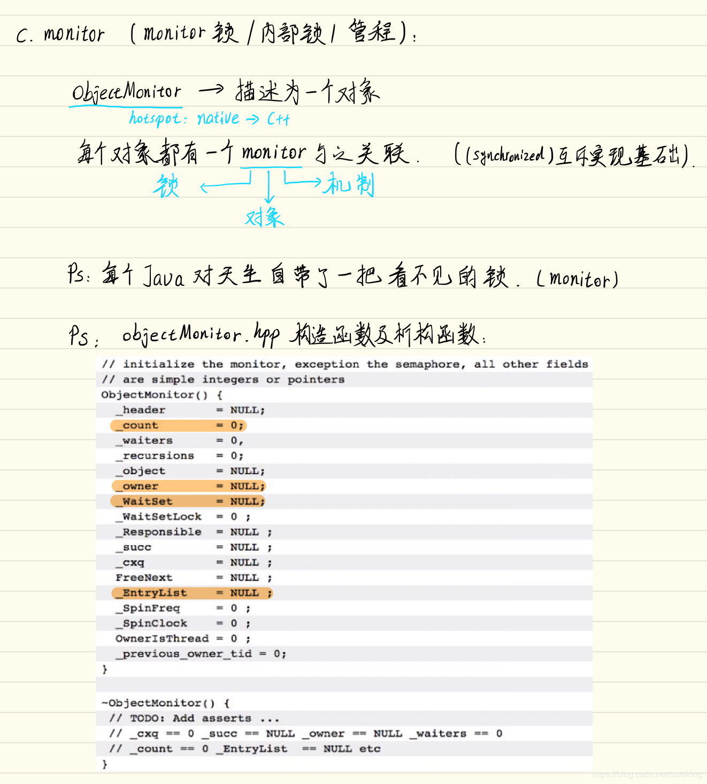
（请不要在意字迹问题，以后一定改正）
说白了，Java的Monitor，就是JVM（如Hotspot）为每个对象建立的一个类似对象的实现，用于支持Monitor实现（实现了Monitor同步原语的各种功能）。
上面这张图的下半部分，揭示了JVM（Hotspot）如何实现Monitor的，通过一个objectMonitor.cpp实现的。该cpp具有count，owner，WaitSet，EntryList等参数，还有monitorenter，monitorexit等方法。
看到这里，大家应该对Monitor不陌生了。一般说的Monitor，指两样东西：Monitor同步原语（类似协议，或者接口，规定了这个同步原语是如何实现同步功能的）；Monitor实现（类似接口实现，协议落地代码等，就是具体实现功能的代码，如objectMonitor.cpp就是Hotspot的Monitor同步原语的落地实现）。两者的关系就是Java中接口和接口实现。
Monitor实现重量级锁
那么monitor是如何实现重量级锁的呢？其实JVM通过Monitor实现Synchronized与JDK通过AQS实现ReentrantLock有异曲同工之妙。只不过JDK为了实现更好的功能扩展，从而搞了一个AQS，使得ReentrantLock看起来非常复杂而已，后续会开一个专门的系列，写AQS的。这里继续Monitor的分析。
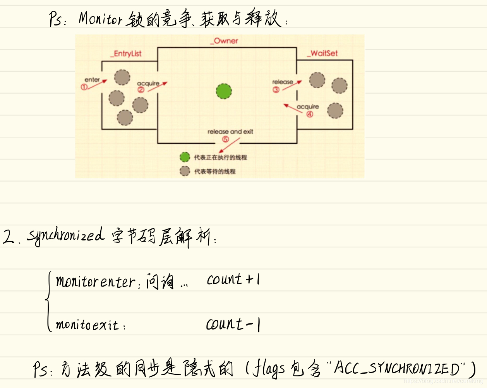
从之前的objectMonitor.cpp的图中，可以看出：
- objectMonitor有两个队列_EntryList和_WaitSet，两者都是用于保存objectWaiter对象的，其中**_EntryList用于保存等锁（线程状态为Block）的对象，而_WaitSet用于保存处于Wait线程状态（区别于Sleep线程状态，Wait线程状态的对象不仅会让出CPU，还会释放已占用的同步锁资源）的对象**。
- _owner表示当前持有同步锁的objectWaiter对象。
- _count则表示作为可重入锁的Synchronized的重入次数（否则，如何确定持有锁的线程是否完成了释放锁的操作呢）。
- monitorenter与monitorexit主要负责加锁与释放锁的操作，不过由于Synchronized的可重入机制，所以需要对_count进行修改，并根据_count的值，判断是否释放锁，是否进行加锁等流程。
这个部分的代码逻辑不需要太过深入理解，只需要清楚明白关键参数的意义，以及大致流程即可。
有关具体重量级锁的底层ObjectMonitor源码解析，我就不再赘述，因为有一位大佬给出解析（我觉得挺好的，再深入就该去看源码了）。
如果真的希望清楚了解代码运行流程，又觉得看源码太过麻烦。可以查看我之后写的有关JUC下AQS对ReentrantLock的简化实现。看懂了那个，你会发现Monitor实现Synchronized的套路也就那样了（我自己就是这么过来的）。
Monitor与持有锁的线程
看完前面一部分的人，可能对如何实现Monitor，Monitor如何实现Synchronized已经很了解了。但是，Monitor如何与持有锁的线程产生关系呢？或者进一步问，之前提到的objectWaiter是个什么东西？
来，上图片。
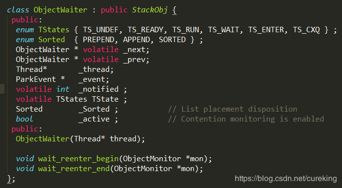
从图中，可以清楚地看到，ObjectWaiter * _next与ObjectWaiter * _prev（volatile就不翻译，文章前面有），说明ObjectWaiter对象是一个双向链表结构。其中通过Thread* _thread来表示当前线程（即竞争锁的线程），通过TStates TState表示当前线程状态。这样一来，每个等待锁的线程都会被封装成OjbectWaiter对象，便于管理线程（这样一看，就和ReentrantLock更像了。ReentrantLock通过AQS的Node来封装等待锁的线程）。
补充
- 由于新到来锁竞争线程，会先尝试成为锁的持有者。在尝试失败后，才会切换线程状态为Block，并进入_EntryList。这就导致新到来的竞争锁的线程，可能在_EntryList不为空的情况下，直接持有同步锁，所以Synchronized为不公平锁。又由于该部分并没有提供别的加锁逻辑，所以Synchronized无法通过设置，改为公平锁。具体代码逻辑参照ReentrantLock。
- notify()唤醒的是_WaitSet中任意一个线程，而不是根据等待时间确定的。
- 对象的notifyAll()或notify()唤醒的对象，不会从_WaitSet移动到_EntryList中，而是直接参与锁的竞争。竞争锁失败就继续在_WatiSet中等待，竞争锁成功就从_WaitSet中移除。这是从JVM性能方面考虑的：如元素在两个队列中移动的资源消耗，以及notify()唤醒的对象不一定能竞争锁成功，那么就需要再移动回_WaitSet。
- Monitor中线程状态的切换是通过什么实现的呢？首先线程状态从根源来说，也只是一个参数而已。其次，据我所知，Hotspot的Monitor是通过park()/unpark()实现（我看到的两份资料都是这么写的）。然后，Hostpot的Monitor中的park()/unpark()区别于JDK提供的park()/unpark()，两者完全不是一个东西。但是落地到操作系统层，可能是同一个东西。最后，这方面我了解得还不是很深入，如果有谁了解，欢迎交流。
锁的变迁
最后就是，无锁，偏向锁，轻量级锁，重量级锁之间的转换了。
啥都别说了，上图。
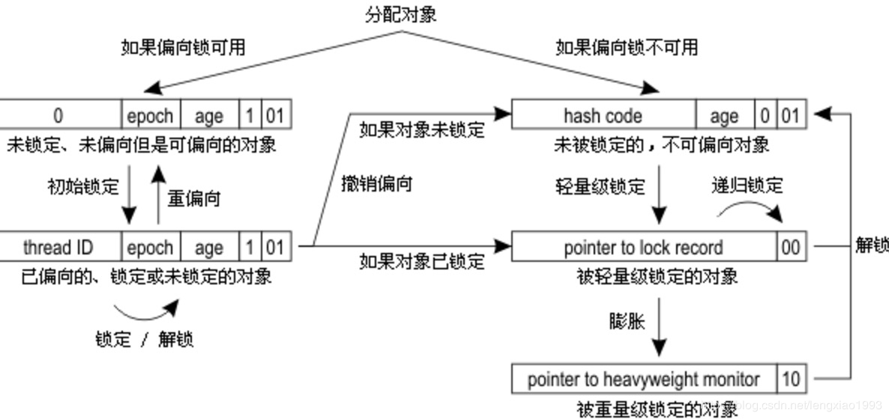
这个图，基本就说了七七八八了。我就不再深入阐述了。
注意一点，轻量级锁降级，不会降级为偏向锁，而是直接降级为无锁状态。
重量级锁，就不用我说了。要么上锁，要么没有锁。
锁的优化
锁的优化，包括自旋锁，自适应自旋锁，锁消除，锁粗化。
自旋锁（multiple core CPU)
- 许多情况下，共享数据的锁定状态持续时间较短，切换线程不值得（也许切换线程的资源消耗就超过了共享数据的锁定持续时间带来的资源消耗）。
- 通过线程执行忙循环等待锁的释放，不让出CPU。
- 缺点：若锁被其它线程长时间占用，会带来许多性能上的开销。
- 自旋的等待时间是有限制的（其中忙循环的循环次数是存在默认值的）。
- Hotspot可通过PreBlockSpin参数，修改默认旋转次数。
自适应自旋锁
- 自旋的次数难以把握，难以完美。
- 自旋的次数不再固定（可能为零）。
- 由前一次在同一个锁上的自旋时间及锁的拥有者的状态来决定。
- 举例：同一个锁对象上，自旋等待刚刚成功获取过锁，并且持有锁的线程正在运行=》JVM认为该锁自旋获得锁的可能性大。
锁消除
JIT（Just In Time)编译时，对运行上下文进行扫描，去除不可能存在竞争的锁。
JIT（Hotspot Code)：
- 运行频繁的代码，将会进行编译，转换为机器码。
- JIT编译是以method为单位的。
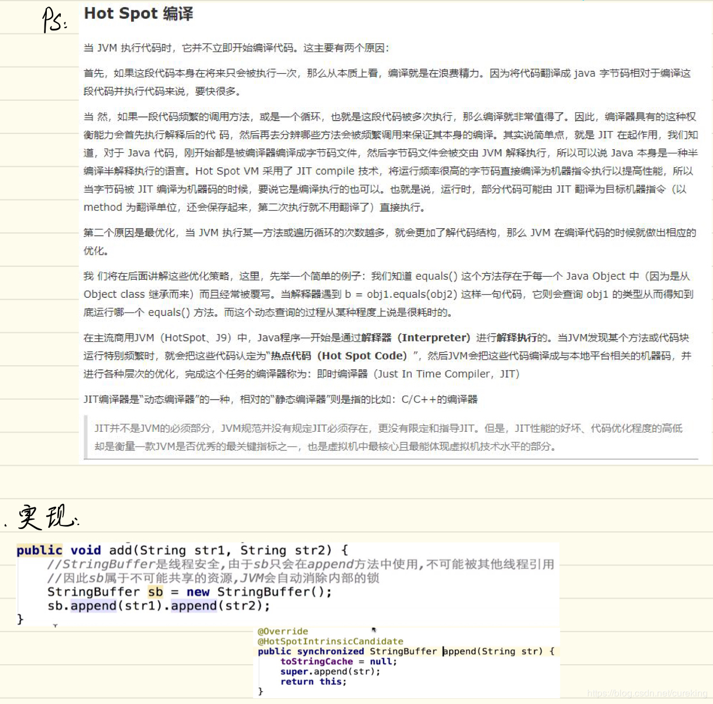
锁粗化
通过扩大加锁的范围，避免反复加锁和解锁。
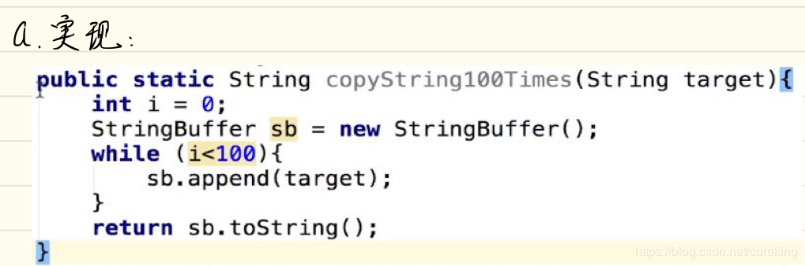
总结
刨除代码，这篇文章在已发表的文章中，应该是我花的时间最长，手打内容最多的文章了。
从开始编写，到编写完成，前前后后，横跨两个月。当然主要也是因为这段时间太忙了，没空进行博客的编写。
在编写这篇博客的过程中，我自己也收获很多，将许多原先自己认为自己懂的内容纠正了出来，也将自己对JVM的认识深度，再推进一层。
最后，愿与诸君共进步。
参考资料
《深入理解Java虚拟机》
关于java数组的内存分配,顺便提一下java变量的内存分布
java 偏向锁、轻量级锁及重量级锁synchronized原理